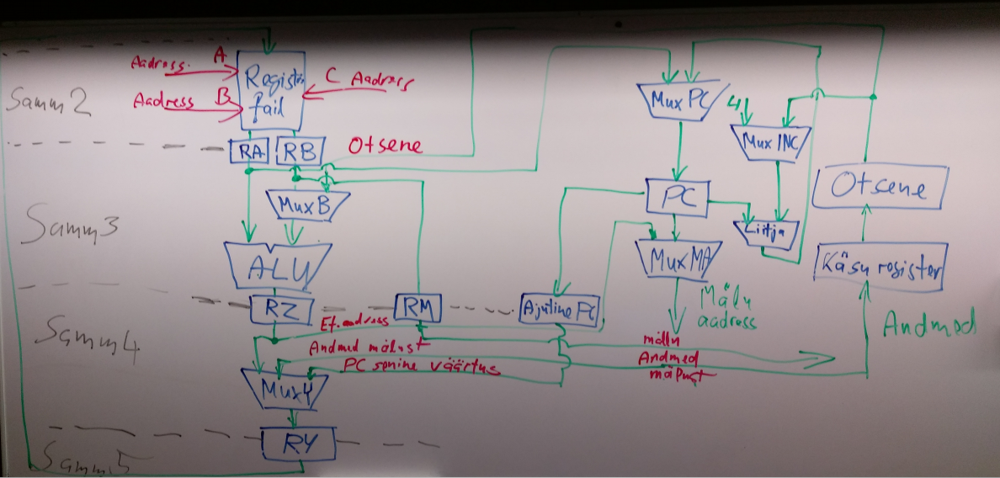

ALU-"Aritmeetika-loogikaplokk" MUX-"Multiplekser" R-"Register" PC-"Arvuti"
Kontakt andmed:
email: kalmerkaurson@gmail.com
tel: 5647 6110
Protsessor käivitab masinkoodi käske ja kordineerib tööd. Tavaliselt kutsutakse protsessorit ka Central Processing Unit ehk CPU. Programmi käivitamisel loetakse käsud ükshaaval protsessori registrisse ja seejärel tehakse seda, mis käsk käseb. Protsessor peab meeles, kus kohal mälus asub järgmine käsk. Kui masinkoodis on vaja teha mingi arvutustehe, siis seda teeb Aritmeetika-loogikaplokk (inglise keelne lühend ALU). Mõningate programmide puhul kasutatakse multipleksereid (Skeemide joonisel lühendina MUX). Multiplekser on kommutaator, millel on mitu sisendit ja üks väljund selleks, et uuendada registrites olevate väärtuste andmeid.
Kontakt andmed:
email: kalmerkaurson@gmail.com
tel: 5647 6110
Toomas Plank
Arvuti arhitektuuri ja riistvara loegu "RISC protsessorid" slaidid
Robert Baruch
RISC-V protsessori arhitektuuri selgitav video:
LMARV-1: A RISC-V processor you can see. Part 1: 32-bit registers.Multiplekseri kirjeldus
Multiplekser - VikipeediaKontakt andmed:
email: kalmerkaurson@gmail.com
tel: 5647 6110